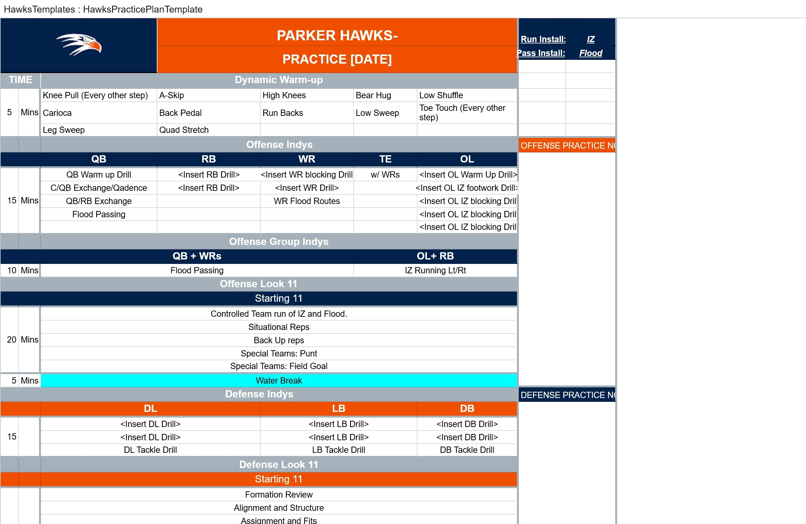
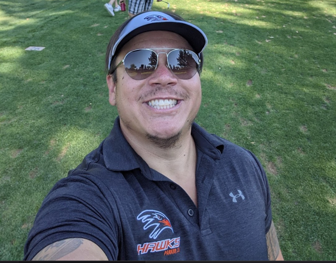

Built for Youth Football Coaches
Every drill. Every plan.
One free resource library.
Practical tools for youth football coaches — drill libraries for every position, practice plan templates, playbook concepts, and offseason training programs.
What You'll Find Here
Everything a youth football coach needs — organized by topic, free to use.
Offense Drills
QB mechanics, RB ball-security, WR routes & releases, and OL footwork drills — organized by position.
4 position groups →Defense Drills
DL get-off, LB pursuit angles, DB coverage skills, and team tackling fundamentals.
4 position groups →Football 101
Blocking schemes, passing concepts, run concepts, route trees, and a guide for coaches new to the game.
Concepts + formations →Physical Training
Conditioning drills, offseason gym programs, contrast training, and an 8-week WR development schedule.
Workouts + programs →Practice Planning
A complete Google Sheets practice plan template — time-blocked, position-specific, ready to customize for your team.
Free template →Coaches Corner
Private staff workspace for Hawks coaches — practice templates, playbook tools, and team resources.
Staff access →
Free Resource
Youth Football Practice Plan Template
Stop improvising. This Google Sheets template gives you a complete framework for every practice — from dynamic warm-up through position indys, team installs, and special teams.
- Time-blocked for a 90-minute practice
- Simultaneous position group periods
- Offense and defense team installs
- Free to copy and customize for your team

Meet Coach Kyle
I'm Coach Kyle, a youth football coach dedicated to helping young athletes develop skills, confidence, and character. This site is the resource library I wish I had when I started coaching — practical tools that save time and help players succeed.
Everything here is free and built around what actually works on the youth football field.